Директивы (at rules) — это конструкции, которая позволяет создавать в CSS правила для изменения внешнего вида либо поведения элементов страницы. Директива начинается со знака @, за которым следует одно из служебных слов. Это общий синтаксис, которому следуют все директивы.
Директивы позволяют объединять CSS-правила и применять их к чему-то конкретному. Они могут использоваться для:
- загрузки нестандартных шрифтов. — @font-face.
- задания ключевых кадров CSS3 анимации — @keyframes.
- указания кодировки используемой браузером — @charset.
- импорта других таблиц стилей для включения их в свой CSS-файл — @import.
- задания специфических стилей только конкретному устройству — @media.
Простые директивы
В основном используются для задания кодировки либо импорта других таблиц стилей — @charset и @import.
Синтаксис: @ключевое_слово правило;
@charset
С помощью директивы @charset можно задать то же что делает мета-тег HTML
<meta charset="utf-8">. Обычно указывается в самом верху CSS-файла.
Обратите внимание на то что HTML мета-тег главнее правила в CSS.
Так задаётся наиболее распространённая с 2008-го года кодировка UTF-8.
UTF-8 включает в себя более двух миллионов символов: все возможные современные алфавиты, цифры, знаки препинания, математические и специальные символы, музыкальные знаки и символы вымерших форм письменности.
@charset "UTF-8";@import
Директива @import "вставляет" в строчку где она объявлена в CSS другую таблицу стилей,
путь к которой указан в скобках после url:
@import url(other.css);See the Pen @import by Aleksey Korovin (@alekskorovin) on CodePen.
Директиву @import размещают в самом верху CSS-файла.
Особенность Использование @import приводит к дополнительному запросу на загрузку подключаемой таблицы стилей.
Комплексные директивы
Комплексные директивы содержат внутри себя CSS правила, которые могут применяться для указанных ситуаций.
Синтаксис: @ключевое_слово {
вложенные_правила
}
@font-face
Эта директива позволяет загружать нестандартные шрифты.
@font-face {
font-family: 'MyWebFont';
src: url('myfont.woff2') format('woff2'),
url('myfont.woff') format('woff');
}@keyframes
Эта директива служит для задания ключевых кадров CSS3 анимации.
@keyframes pulse {
0% {
background-color: blue;
}
100% {
background-color: green;
}
}@media
В этой директиве находятся условные выражения, применяющие определённые стили в зависимости от характеристик экрана либо для указанного устройства.
@media может быть использована для применения дополнительных стилей для печатающих устройств — принтера.
Эти стили будут добавлены к элементам страницы только при печати:
@media print {
.header, .footer {
display: none; /* Скрываем header/footer - они не нужны для печати */
}
.features-list li {
width: 100%; /* растягиваем на 100% элементы списка */
}
}Задание #1.1
- Скачать и разархивировать mobi.zip или стянуть последнюю версию своего проекта.
-
Открыть в браузере index.html и нажать Ctrl P чтобы открыть диалог предварительного просмотра версии страницы для печати.
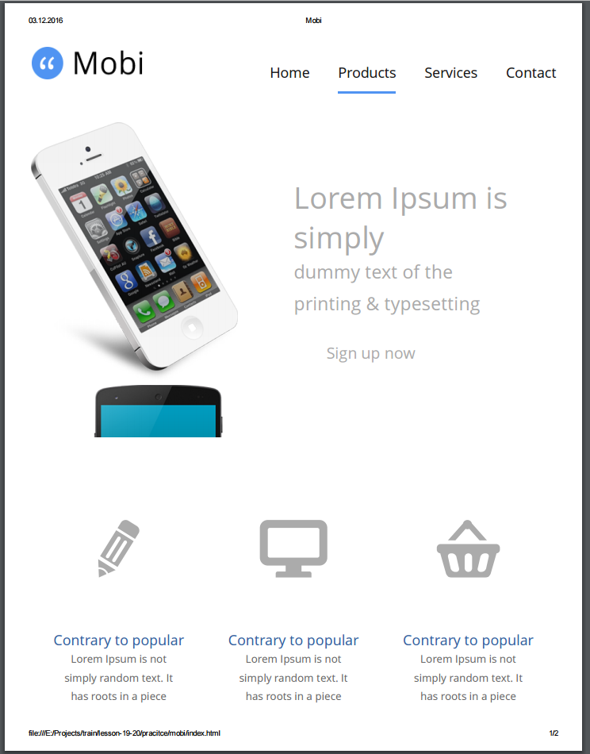 - Убедиться что header и footer присутствуют, а элементы списка features отображаются колонками.
-
Открыть в редакторе кода mobi/css/main.css и добавить дополнительные стили для печати и сохранить файл:
@media print { .header, .footer { display: none; /* Скрываем header/footer - они не нужны для печати */ } .features-list .features-img { float: left; /* изображения смещаем влево */ } .features-list li { width: 100%; /* растягиваем на 100% элементы списка */ } li { page-break-inside: avoid; /* запрещаем разрыв страницы в элементах li */ } .content-accordion { width: 100%; /* растягиваем аккордион на всю ширину */ } .accordion-body { display: block; /* раскрываем элементы аккордиона */ } } -
Обновить в браузере страницу index.html и нажать Ctrl P чтобы снова отобразить диалог предварительного просмотра версии для печати.
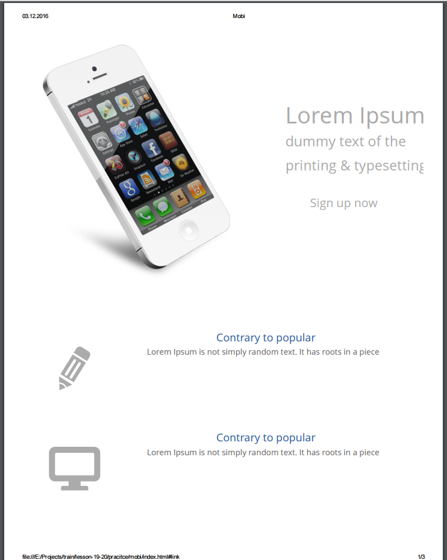 - Убедиться что стили для печати изменились.
Особенность Всегда задавайте фоновый цвет там где это возможно.
В версии для печати фоновые изображения не отображаются!
Итак мы можем указывать тип устройства для которых работают стили. В предыдущем примере это были устройства типа print.
Распространённые типы устройств:
- screen — всевозможные экраны
- print — принтеры
- projection — проекторы
- handheld — носимые устройства
- all — устройства всех типов
Детальная информация — http://frontender.info/the-at-rules-of-css/ (Директивы CSS)
Медиа выражения
Помимо типа устройства с помощью медиа выражений мы можем задавать стили для отдельных типов устройств а так же для различных размеров экрана:
- Смартфонов Android, iOS либо других операционных систем.
- Планшетов Android, iOS либо других операционных систем.
- Указывать стили для определённых размеров экрана.
Используя медиа выражения (media queries) мы можем задавать разные стили для разной ширины экрана браузера.
Таким образом с помощью медиа выражений возможно задавать разный дизайн при разных размера экрана, при этом одна и та же страница может выглядеть совсем по другому для мобильных телефонов, планшетов и разных размерах окна браузера.
Чтобы задать специфические стили для устройств экранов надо использовать медиа выражение:
@media screen {
html {
font-size: 12px;
}
.header-menu {
display: block;
}
}CSS для размера видимой области в браузере
Предыдущий пример может быть расширен, мы можем указать не только тип устройства screen но и конкретный размер экрана:
See the Pen @media screen max-width by Aleksey Korovin (@alekskorovin) on CodePen.
Здесь мы задали синий фон и белый цвет текста только для видимой области экрана с шириной 640px и меньше.
Таким же образом можно задавать изменение дизайна при определённой ширине, например:
- Скрывать одни элементы и отображать другие.
- Идущие один под другим блоки превращать в колонки.
- Перекрашивать меню.
Можно использовать несколько @media директив идущих один за другим и указывать в них стили, которые будут включаться на указываемой ширине экрана.
See the Pen @media screen max-width by Aleksey Korovin (@alekskorovin) on CodePen.
Можно указывать ориентацию мобильного устройства: портретную либо альбомную.
@media screen and (orientation: landscape) {
.header-menu {
float: right;
}
}
@media screen and (orientation: portrait) {
.header-menu {
float: none;
}
}Ширина и высота устройства
Можно вычислять устройства используя в @media выражениях размеры экрана устройства:
- device-width — ширина устройства
- device-height — высота устройства
- min-device-width — минимальная ширина устройства
- max-device-width — максимальная ширина устройства
- min-device-height — минимальная высота устройства
- max-device-height — максимальная высота устройства
Например стили работающие в iPhone в портретной и альбомной ориентации:
/* iPhone в портретной и альбомной ориентации */
@media only screen
and (min-device-width: 320px)
and (max-device-width: 480px)
and (-webkit-min-device-pixel-ratio: 2) {
.layout {
width: 100%;
}
}Пиксельное соотношение (pixel ratio)
Важно помнить что пиксель в CSS может отличаться от физического пикселя.
Например в то время как физический размер экрана 750px, браузер может прменить CSS правила предполагая что это ширина 480px. В этом случае пиксельное соотношение 1.5:1 — в итоге один CSS пиксель равняется одному с половиной физическому пикселю.
У стандартного монитора физический пиксель совпадает с CSS-ным поэтому проблем с этим на обычных настольных компьютерах не возникает в отличии от мобильных устройств.
На мобильных устройствах либо Retina-дисплеях настольных компьютеров 1 CSS пиксель может быть равен двум и более физическим пикселям.
Поэтому для Retina-экранов подготавливаются изображения которые в 2 раза больше изображений для обычных экранов — в этом случае на Retina экранах изображение будет более чётким и резким потому что физические пиксели экрана будут совпадать с пикселями изображения (их тоже в 2 раза больше).
Применить стили к устройствам с определённым пиксельным соотношением например Retina-дисплеем можно так:
@media (device-pixel-ratio: 2) {
body {
background: url(twice-bigger-image.png);
}
}Для iPhone-ов используется свойство -webkit-device-pixel-ratio — из-за того что используется браузерный движок webkit.
Так же возможно применять стили исходя из разрешения экрана устройства:
@media screen and (resolution: 326dpi) { /* */ }@media screen and (min-resolution: 96dpi) { /* */ }Либо по соотношению сторон (aspect ratio) — отношение ширины к высоте:
@media screen and (device-aspect-ratio: 16/9) { /* */ }Презентация на тему экранов и пиксельного соотношения от Вадима Макеева — https://pepelsbey.net/pres/clear-and-sharp.
Большой список media queries для стандартных устройств — https://css-tricks.com/snippets/css/media-queries-for-standard-devices/
Мета тег задающий параметры масштабирования
Если не задавать в HTML мета тег задающий правила масштабирования, мобильное устройство будет масштабировать (увеличиват либо уменьшать) сайт таким образом чтобы он максимально вписывался в окно устройства. При этом начисто исчезает возможность контролировать как именно будет выглядеть отмасштабированная страница.
Для того чтобы избавиться от проблем с масштабирование используется мета тег который добавляется в элемент head с указанными параметрами:
<meta name="viewport" content="width=device-width,
initial-scale=1, maximum-scale=1,
user-scalable=no">- width=device-width — задаёт ширину контента равной ширине экрана устройства.
- initial-scale=1 — изначальный масштаб один к одному.
- maximum-scale=1 — максимальный масштаб один к одному.
- user-scale=no — запрет на масштабирование пользователем страницы.
Подобный мета-тег но без запрета масштабирования пользователем установлен в фреймворке Bootstrap.
Задание #1.2
-
Открыть в браузере mobi/index.html, открыть панель разработчика нажав Ctrl Shift M, выбрать iPhone 6 и обратить внимание как масштабируется страница в режиме эмуляции iPhone 6.
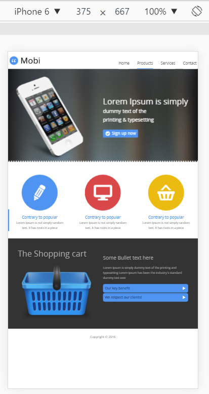
При этом проблема очевидна — устройство само отмасштабировало страницу и в таком масштабе все элементы дизайна будут крошечными. - Открыть в редакторе кода mobi/index.html и добавить в начало элемента head мета-тег:
<meta name="viewport" content="width=device-width, initial-scale=1, maximum-scale=1, user-scalable=no"> -
Обновить страницу в браузере и убедиться что теперь проблема с масштабированием исчезла:
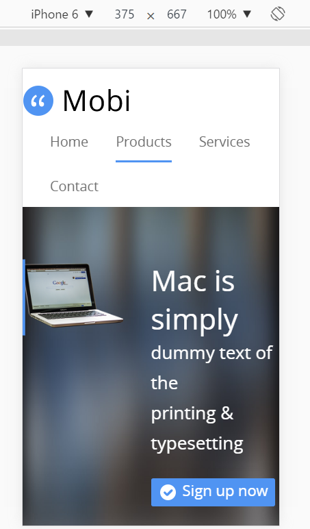
Адаптивный веб-дизайн — дизайн веб-страниц, обеспечивающий правильное отображение сайта на различных устройствах и динамически подстраивающийся под заданные размеры окна браузера.
Всё началось 25-го мая 2010-го года с публикации в журнале AListApart статьи Ethon-а Marcotte с названием Responsive Web Design.
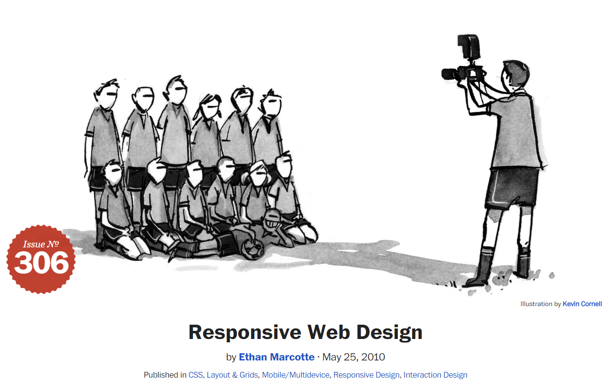Он впервые описал, показал и доказал перспективность этого подхода, дизайна и технологии.

Основные идеи:
- Для мобильных устройств и разных экранов необходим дизайн оптимально подходящий под конкретный размер.
- Для реализации нескольких дизайнов в рамках одной страницы можно не менять HTML. Один сайт может работать на смартфоне, планшете, ноутбуке и телевизоре.
- Для реализации адаптивного или отзывчивого дизайна можно использовать одну или несколько таблиц стилей, либо несколько CSS правил которые включаются/выключаются с помощью @media выражений.

Детально о терминологии — Адаптивно-отзывчивый: разбираемся в терминологии
Основные стратегии реализации отзывчивого и адаптивных дизайнов:
- desktop first — вначале пишутся стили для настольных компьютеров, затем добавляются стили для мобильных устройств.
- mobile first — вначале пишутся стили для мобильных устройств, которые дополняются стилями для настольных компьютеров. Это наиболее предпочтительный вариант.
Свойство box-sizing
При реализации отзывчивого дизайна возникли проблемы с тем что при изменении ширины float-нутых элементов посредством @media выражений внутренний отступ приплюсовывался к процентному размеру.
See the Pen @media screen mobile first grid by Aleksey Korovin (@alekskorovin) on CodePen.
Спасение от проблем с внутренними отступами при процентной ширине пришло в виде
box-sizing: border-box. После добавления этого свойства ширина и высота теперь считается вместе с внутренними отступами и рамкой.
Теперь адаптивная сетка со стратегией mobile first выглядит лучше:
See the Pen @media screen mobile first grid - box-sizing: border-box by Aleksey Korovin (@alekskorovin) on CodePen.
Альтернативный вариант с использованием функции calc выглядит более громоздко и все равно не решает проблемы когда задана рамка:
See the Pen @media screen mobile first grid - calc by Aleksey Korovin (@alekskorovin) on CodePen.
Размерные единицы относительно viewport — vw, vh, vmin, vmax
В процентах можно задавать ширину элементов и отступы, но невозможно задать размеры шрифта которые бы зависли от ширины или высоты видимой области браузера.
Для решения этой проблемы появились новые размерные единицы:
- 1vw = 1% от ширины окна.
- 1vh = 1% от высоты окна.
- 1vmin = 1vw или 1vh — выбирается то, которое меньше.
- 1vmax = 1vw или 1vh — выбирается то, которое больше.
See the Pen fully responsive block by Aleksey Korovin (@alekskorovin) on CodePen.
Поддержка единиц vw, vh, vmin, vmax — http://caniuse.com/#feat=viewport-units.
Типографика вписывающаяся в видимую область
https://css-tricks.com/viewport-sized-typography
Задание #2.1
-
Заказчик прислал макет мобильной версии домашней страницы
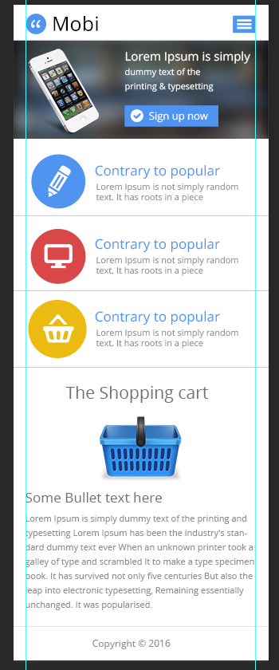
Ознакомиться с дизайном. - Скачать PSD-файл с мобильной версией дизайна mobi-home-mobile.psd и открыть его в Photoshop-е и ознакомиться с размерами элементов.
Мы выберем точку до которой будет использоваться мобильный дизайн это будет 640px — после этой ширины экрана будет использован дизайн для настольных компьютеров.
Добавление общих отступов
В макете общие отступы слева и справа по 16px, мы можем добавить их сразу для всех контейнеров для мобильной версии и обнулить для desktop-версии.
Задание #2.2
-
Открыть в редакторе кода таблицу стилей mobi/css/main.css
и обновить стили:
.header, .carousel-inner, .features-list, .footer, .content-inner, .contact-content, .contact-us-c { padding-left: 16px; padding-right: 16px; max-width: 967px; margin: auto; } @media and (min-width: 768px) { .header, .carousel-inner, .features-list, .footer, .content-inner, .contact-content, .contact-us-c { padding-left: 0; padding-right: 0; } } -
Обновить страницу mobi/index.html в браузере и убедиться что отступы появились.
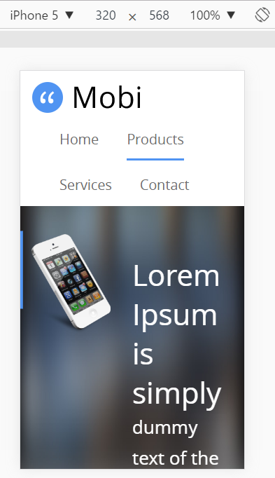
Теперь можно обновить размер логотипа.
Задание #2.3
-
Открыть в редакторе кода таблицу стилей mobi/css/main.css
и обновить стили для логотипа:
.header-logo { float: left; width: 9.1rem; } .header-logo img { height: auto; } @media screen and (min-width: 640px) { .header-logo { width: 15.5rem; padding-left: 0.1rem; } } -
Обновить страницу mobi/index.html в браузере и убедиться что логотип стал нужного размера.
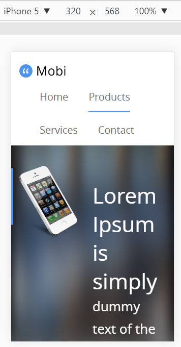
Теперь мы можем изменить вид пунктов меню более подходящим под мобильную версию. Растянем пункты меню и подпункты на 100%.
Задание #2.4
- Открыть в редакторе кода таблицу стилей mobi/css/main.css
и обновить стили для меню и подменю:
.header-menu a { color: #6c6c6c; font-size: 2rem; line-height: 1; text-decoration: none; display: block; padding: 2.5rem 0 1.7rem 0; } @media screen and (max-width: 640px) { .header-menu .header-submenu { width: 100%; display: block; position: static; } .header-menu li { border-top: solid 1px #ccc; } } @media screen and (min-width: 640px) { .header-menu { float: right; } .header-menu li { margin-left: 4rem; display: inline-block; } .header-menu a { display: inline-block; } } .header-menu li.active { border-color: #5094f2; } - Проверить отобразилось ли меню и подменю иначе чем в desktop версии.
Теперь можно добавить кнопку которая будет показывать/скрывать меню.
Задание #2.5
- Скачать изображение кнопки menu-icon.png и скопировать его в папку mobi/img.
- Открыть index.html и вставить после
<a class="header-logo" href="index.html"><img src="img/logo.png" width="155" height="44" alt="Mobi" /></a>
код
<img class="mobile-menu-toggle" src="img/menu-icon.png" alt="" > -
Перед закрывающим тегом body добавить скрипт "оживляющий" переключение меню:
Этот скрипт при клике на изображение гамбургер-меню то добавляет то убирает класс "active" с меню .header-menu.<script> (function() { document.querySelector('.mobile-menu-toggle') .addEventListener('click', function() { document.querySelector('.header-menu') .classList.toggle('active'); } ); }()); </script> -
Добавить стили для меню и его переключателя перед последним комментарием /* Header */
.mobile-menu-toggle { float: right; } @media (min-width: 640px) { .mobile-menu-toggle { display: none; } .header-menu { clear: none; } } @media (max-width: 640px) { .header { min-height: 4.5rem; padding-top: 1.1rem; } .header-menu { display: none; } .active.header-menu { display: block; } } * { box-sizing: border-box; } - Проверить в браузере изменения header-а.
{kind=link}
Теперь можно исправить размеры текста в карусели.
Задание #2.6
-
Обновить правила для .carousel-slides h3 и .carousel-slides p:
.carousel-slides h3 { font-size: 1.5rem; } .carousel-slides p { font-size: 1.1rem; line-height: 1.73; } @media (min-width: 640px) { .carousel-slides h3 { font-size: 4.2rem; } .carousel-slides p { font-size: 2.6rem; } } - Проверить в браузере изменения.
Исправим отступ сверху в слайде.
Задание #2.7
-
Обновить правила для .carousel-inner:
.carousel-inner { padding: 1rem 0 0.6rem 0; position: relative; } @media (min-width: 640px) { .carousel-inner { padding: 4rem 0 1rem 0; } } - Проверить изменения в браузере.
Исправим отступ над текстом.
Задание #2.8
-
Обновить правила для .carousel-content:
.carousel-content { float: right; width: 50%; } @media (min-width: 640px) { .carousel-content { margin-top: 10.4%; } } - Проверить изменения в браузере.
Исправить часть стилей кнопки.
Задание #2.9
-
Обновить правила для .carousel-slides .carousel-button:
.carousel-content { float: right; width: 50%; } @media (min-width: 640px) { .carousel-content { margin-top: 10.4%; } } - Проверить изменения в браузере.
Наконец уберём "зубчики".
Задание #2.10
-
Обновить правила для .carousel:
.carousel { background: url(../img/carousel-background.jpg) no-repeat 0 0 fixed; background-size: cover; overflow: hidden; max-height: 48.2rem; } @media (min-width: 640px) { .carousel { background: url(../img/battlement.png) repeat-x 0 100%, url(../img/carousel-background.jpg) no-repeat 0 0 fixed; background-size: 12px 8px, cover; } } - Проверить изменения в браузере.
Исправим основные стил для блока features.
Задание #2.11
-
Обновить правила для .carousel:
.features .features-list { padding: 0; max-width: 1072px; } .features-list li, .features-list li>* { margin: 0; } .features-list li { padding: 1.7rem 1.6rem 0.9rem 2.3rem; border-bottom: solid 1px #cccccc; list-style: none; overflow: hidden; } .features-list .features-img { width: 6.9rem; height: 6.9rem; margin-right: 1.3rem; border-radius: 50%; position: relative; float: left; } .features-img [class^="icon-"] { font-size: 3.6rem; color: #fff; position: absolute; left: 50%; top: 50%; transform: translate(-50%, -50%); } .features-list li:first-child .features-img { background: #5094f2; } .features-list li:nth-child(2) .features-img { background: #d94748; } .features-list li:last-child .features-img { background: #ebbb11; } .features-list h3 { color: #5094f2; font-size: 1.7rem; margin: 1.3rem 0 0 0; } .features-list p { color: #666666; font-size: 1.1rem; line-height: 1.2; margin: 0; } @media (min-width: 640px) { .features .features-list { padding: 6.5rem 0 4.3rem; } .features-list li { border: 0; padding: 0; text-align: center; float: left; width: 33.3%; } .features-list .features-img { margin: auto; width: 18.6rem; height: 18.6rem; float: none; } .features-img [class^="icon-"] { font-size: 8.1rem; } .features-list h3 { font-size: 2rem; margin: 2.2rem 3rem 0 3rem; } .features-list p { font-size: 1.5rem; line-height: 1.74; margin: 0 4rem 0 4rem; } } - Проверить изменения в браузере.
После работы с @media queries, необходио тестировать страницу и в мобильном и полноэкранном разрешениях.
При добавлении стилей для мобильного дизайна при стратегии mobile first (которую мы применяли во всех предыдущих примерах) выполняете следующие шаги:
- Копируете существующие стили которые будете переопределять для мобильного дизайна внутрь директивы которая всегда ставится после существующих стилей @media (min-width: 640px) { ... }
- Возвращаетесь выше по коду — то что идёт до медиа выражения и делаете стили для мобильной версии.
WordPress
На сегодняшний день WordPress является самой популярной бесплатной CMS (Content Management System).
Официальное определение — WordPress - это мощная платформа для персонального блоггинга. Она содержит отличный набор возможностей для того, чтобы максимально упростить процесс создания онлайн-публикаций, сделать его приятным и удобным. Мы с гордостью представляем вам свободно распространяемую, соответствующую стандартам, быструю, легкую и бесплатную платформу для персонального блоггинга с практичными настройками и свойствами по умолчанию и с чрезвычайно гибким и настраиваемым ядром. (Особенности WordPress).
На базе этой CMS системы очень просто создавать небольшие динамические сайты.
В WordPress по умолчанию идёт поддержка:
- Контентных страниц
- Блога с возможностью создания категорий, подкатегорий и т.д.
- Поиска по сайту.
- Плагинов — отдельных модулей отвечающих за расширение функциональности сайат (их существует огромное количество — https://wordpress.org/plugins/)
- Тем — набора файлов при замене которых полностью меняется внешний вид сайта — https://wordpress.org/themes/.
Задание #3.1
- Зайти на страницу выбора WordPress тем — https://wordpress.org/themes/browse/popular/
- Скачать и разархивировать архив с понравившейся темой нажав на кнопку Download
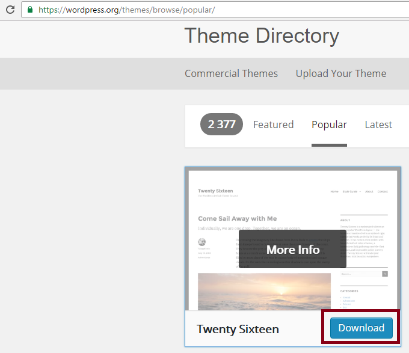 -
Открыть папку с темой, найти файл style.css и открыть его в редакторе кода
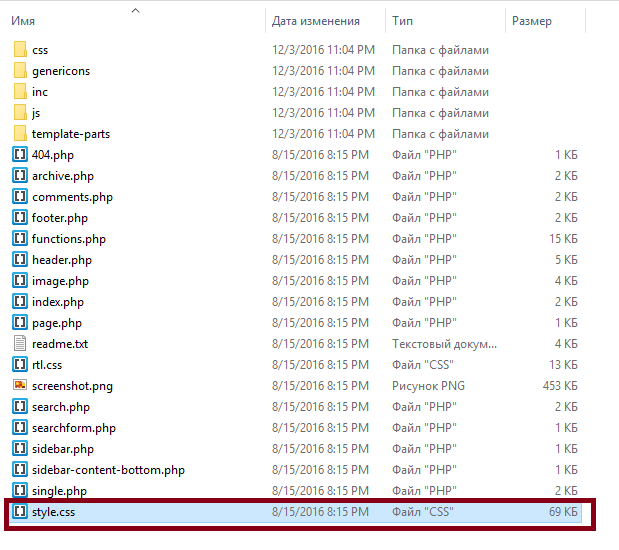 -
Поменять название темы на любое другое название и сохранить файл.
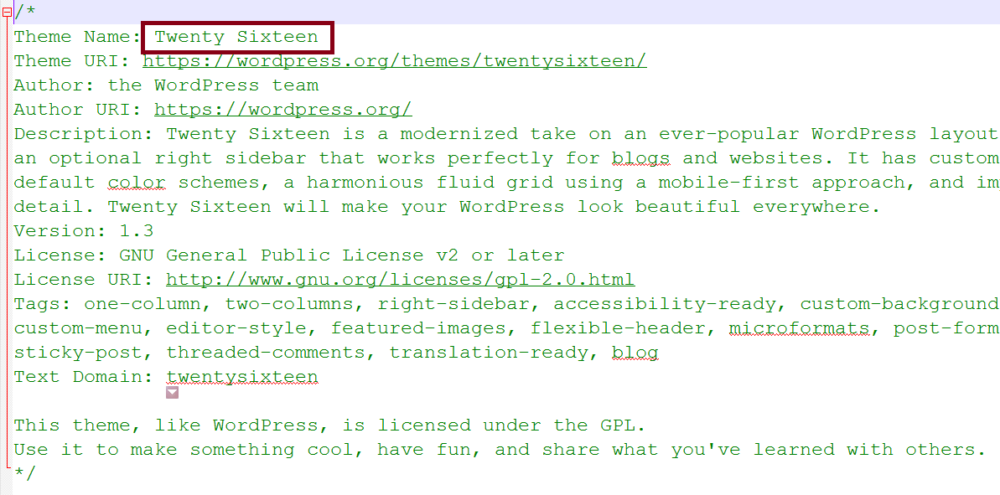 -
Открыть файл screenshot.png и посмотреть на изображение того как выглядит тема.
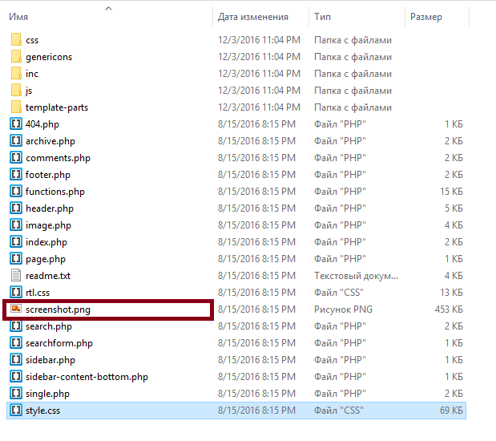 - Попробовать изменить какие-либо стили в styles.css.
-
Открыть файл header.php
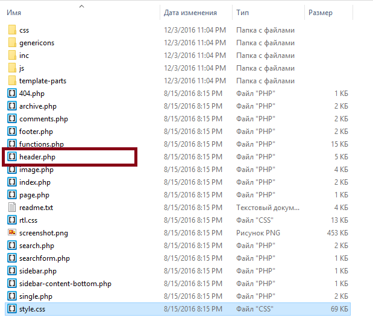 -
И после открывающего тега body добавить код:
<div>Блок который отобразится на всех страницах</div> - Поменять название папки с темой на новое, заархивировать и отправить в Slack.
Домашнее задание
- Исправить размеры значка в кнопке Sign up now в карусели для мобильного дизайна.
- Исправить дизайн блока content в соответствии с мобильным дизайном в PSD.
- Исправить дизайн блока footer в соответствии с мобильным дизайном в PSD.
- Для всех HTML страниц проекта добавить мета тег:
<meta name="viewport" content="width=device-width, initial-scale=1, maximum-scale=1, user-scalable=no">